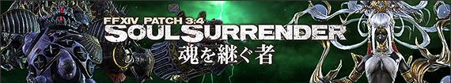
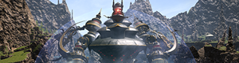
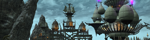
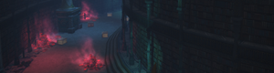
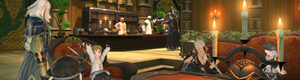
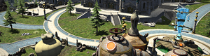
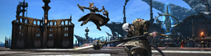
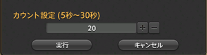
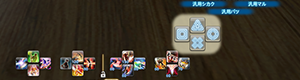

FF14 patch3.4 任务列表 更新笔记
伊修加德砥柱层 (X:11.5 Y:11.2) 福尔唐家的骑兵
摩杜纳 (X:21.7 Y:8.7) 异国的诗人
伊修加德砥柱层 (X:8.7 Y:7.8)布里亚迪安
石之家 (X:6.1 Y:5.2) 蛇心

石之家 (X:6.1 Y:5.2) 蛇心

伊修加德基础层 (X:9.9 Y:11.4) 齐尔

各大国防联军 人事负责人
田园郡 (X:7.0 Y:5.9) 温柔的冒险者
一部分的家具/庭具撤去的时候不会消失。


追加了新的功能「播放列表」。
没获得的乐谱的曲名也可以表示了。

中型陆行鸟外墙
大型陆行鸟外墙

追加了新的九宫幻卡。
追加了新的可对战NPC。

大会对战的对手扩展到同区的玩家。
萌宠之王对战时的费用取消了。


新增任意对战「自定义比赛」。

集体动作功能里追加了照明。
追加了集体动作的对象动作可以暂时停止的「动作停止」功能。
景观相机在执行中在一定范围内可以操作，可以调整构图。
FF14 patch3.4 任务列表 更新笔记
※以下内容包含很多剧透，请注意！
【主线】
「伊修加德假日」伊修加德砥柱层 (X:11.5 Y:11.2) 福尔唐家的骑兵
完成主线「绝命怒嚎」

龙堡内陆低地 (X:21.7 Y:18.8) 米黛
【亚历山大机神城 天动之章】
「加速的危机」龙堡内陆低地 (X:21.7 Y:18.8) 米黛
完成支线「没有她的世界」
平均装等230～
【亚历山大零式机神城 天动之章】
「英雄幻想诗：机神城之章」摩杜纳 (X:21.7 Y:8.7) 异国的诗人
完成支线「迈向无人知晓的明天」
天动之章1 平均装等245～ 天动之章2 平均装等250～
天动之章3 平均装等255～ 天动之章4 平均装等255～
【圣恩达利姆神学院记】
「恩师的指引」伊修加德砥柱层 (X:8.7 Y:7.8)布里亚迪安
完成支线「欢笑的使者」
【三斗神】
「黄金色的灾厄」石之家 (X:6.1 Y:5.2) 蛇心
完成支线「赌上行星的命运」
平均装等220～
【歼殛：三斗神】
「登峰造极的女神索菲娅」石之家 (X:6.1 Y:5.2) 蛇心
完成支线「黄金色的灾厄」
平均装等235～
【希尔迪布兰德】
「第一个家」伊修加德基础层 (X:9.9 Y:11.4) 齐尔
完成支线「抓住线索」

福尔唐伯爵府 (X:6.1 Y:6.0) 阿尔菲诺
【险峻峡谷 塞尔法特尔溪谷】
「险峻溪谷」福尔唐伯爵府 (X:6.1 Y:6.0) 阿尔菲诺
完成主线「伊修加德假日」
平均装等210～

田园郡 (X:5.5 Y:6.6) 米德奈特·迪尤
【秘本宝库 迦巴勒幻想图书馆】
「秘本宝库 迦巴勒幻想图书馆」田园郡 (X:5.5 Y:6.6) 米德奈特·迪尤
完成主线「苍穹之禁城」
平均装等210～
【冒险者小队】
「荣光与分队同在」各大国防联军 人事负责人
完成支线「遗失的挑战笔记」
【库洛的奇谈书】
「天书奇谈」田园郡 (X:7.0 Y:5.9) 温柔的冒险者

【公寓】
在各国的冒险者居住区里追加了个人用的居住设施「公寓」。【家具】
追加新的家具。一部分的家具/庭具撤去的时候不会消失。
【水族箱】
追了可以把鱼放进去观赏的调度品「水族箱」。
【管弦乐琴】
追加了新的管弦乐琴乐谱。追加了新的功能「播放列表」。
没获得的乐谱的曲名也可以表示了。
【地下工坊】
小型陆行鸟外墙中型陆行鸟外墙
大型陆行鸟外墙
【九宫幻卡对局】
追加了卡牌对战专用房间「幻卡对局室」。追加了新的九宫幻卡。
追加了新的可对战NPC。
【萌宠之王】
可以通过「任务搜索器」申请参加。大会对战的对手扩展到同区的玩家。
萌宠之王对战时的费用取消了。
【美容师】
追加新的发型。
【情感动作】
追加新的情感动作。

伴随着建筑物的增加 变更了一部分NPC的位置。
【田园郡】
增加了田园郡的建筑物。伴随着建筑物的增加 变更了一部分NPC的位置。

【决斗】
实装了在特定的公共区域里可进行1v1对战（PVP）的「决斗」。
【群狼盛宴】
新增观战模式。新增任意对战「自定义比赛」。
【陆行鸟用装甲】
追加新的陆行鸟用装甲。【坐骑】
追加新的坐骑。
【宠物】
追加新的宠物。【集体动作/观景相机】暂定
追加了可以调整画面表现的「照相机设定」窗口。集体动作功能里追加了照明。
追加了集体动作的对象动作可以暂时停止的「动作停止」功能。
景观相机在执行中在一定范围内可以操作，可以调整构图。

【倒计时】暂定
追加战斗开始倒计时功能。

【双十字热键栏】
追加了指定的十字手柄图标可以更进一步的展开的「双十字热键栏」。